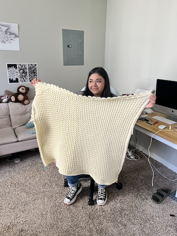
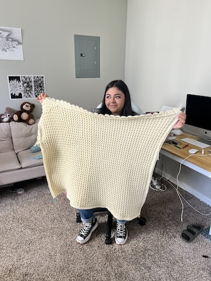

Crochet is a wonderfully unique needlework technique that uses a single
hooked tool to create beautiful loops of yarn, resulting in a delicate
and intricate fabric. Unlike knitting, which involves two needles, crochet
allows for a wide variety of stitches and placements, making patterns often
more complex and exciting. With crochet, you can unleash your creativity to
craft everything from cozy blankets and stylish scarves to adorable toys!
The origins of crochet are a bit of a mystery, which just adds to its charm!
Some believe it started in Arabia and traveled along trade routes to various
Mediterranean regions. Others think it might have roots in indigenous South
American tribes. There's even a theory that crochet evolved from a traditional
Chinese needlework technique that made its way to Turkey, India, Persia, and
North Africa. However, it wasn't until European immigrants brought their love
for crochet to the United States in the early 19th century that it really began
to flourish as an art form we know and love today. Happy crocheting!
I first picked up crochet when I was around 13 or 14 years old. A family friend
took me to a Michael's store that offered lessons, and that's where I learned
the basics—how to hold the hook and the yarn. I even made my very first scarf
there! At that time, I didn't find crochet all that exciting, so I ended up
putting it down.
Fast forward to four years ago, and I decided to give it another shot! My family
often tells me I remind them of my grandmother, who had a real talent for crocheting,
embroidery, and cross-stitching. She created lots of beautiful pieces, including
lovely pillowcases for each of her grandchildren. I'm proud to be the only grandchild
who has continued her crochet tradition!
As I keep practicing, I'm getting better every day. I find crocheting so calming; it
really helps me unwind. I've made all sorts of things—scarves, socks, shawls, and
blankets. Right now, I'm working on a cozy scarf hat, and I can't wait to see how it
turns out!
 

| Stitches | Description |
|---|---|
| Slip Stitch | Step 1: Wrap the tail end of your yarn behind the working end to form a loop. Step 2: Insert your finger and thumb into the loop, then grab the working end of the yarn and pull it through the loop. Step 3: Place this new loop onto the end of your hook and tighten it. |
| Single Stitch | Step 1: Insert the hook into a stitch and hook the yarn. Step 2: Pull through the stitch. At this point, you should have two loops on the hook. Step 3: Hook onto the yarn that is out. Step 4: Pull it through the two loops, which are the hook. |
| Half Double Stitch | Step 1: Loop the hook around the extra yarn that is out.
(You will have two loops on the hook) Step 2: you will insert the hook into the next stitch. Step 3: Pull through the stitch. At this time, you should have tree loops on the hook. Step 4: Hook the extra yarn on the hook. Step 5: Pull through all tree loops. |
| Double Stitch | Step 1: Loop the hook around the extra yarn that is out.
(You will have two loops on the hook) Step 2: you will insert the hook into the next stitch. Step 3: Pull through the stitch. At this time, you should have tree loops on the hook. Step 4: Hook the extra yarn on the hook. Step 5: Pull through two loops only. You will then only have two loops on the hook. Step 6: Hook the extra yarn on the hook again. Step 7: Pull through the two loops that are on the hook. |
| Treble Stitich | Step 1: Loop the hook around the extra yarn twice.
(You will have three loops on the hook) Step 2: you will insert the hook into the next stitch. Step 3: Pull through the stitch. At this time, you should have four loops on the hook. Step 4: Hook the extra yarn on the hook. Step 5: Pull through two loops only. You will then only have three loops on the hook now. Step 6: Hook the extra yarn on the hook again. Step 7: Pull through two loops only. You will then only have two loops on the hook. Step 8: Hook the extra yarn on the hook again. Step 9: Pull through the two loops that are on the hook. |